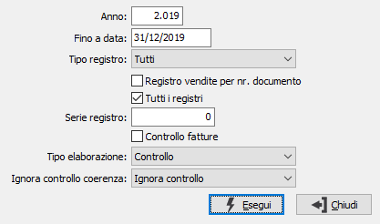

Controllo registri Iva
La registrazione contabile delle fatture, specialmente delle fatture d’acquisto, richiede una data di registrazione ed un numero di protocollo. Quando la registrazione avviene in sequenza, è il programma stesso che provvede a proporre numeri di protocollo coerenti con le date di registrazione. Quando invece la registrazione non viene effettuata in sequenza, il numero di protocollo proposto dal sistema viene continuamente modificato dall’operatore.
Può quindi verificarsi una incoerenza fra date di registrazione e numeri di protocollo, che il programma non può correggere perché ciò comporterebbe la modifica della data oppure del numero di protocollo che sono stati anche segnati sui documenti.
Questo programma, il cui uso è vivamente consigliato agli utenti che effettuano le registrazioni di fatture fuori sequenza, consente di evidenziare eventuali incoerenze prima della stampa definitiva dei registri Iva.

ANNO: inserire l'anno fiscale per il quale si desidera effettuare il controllo coerenza protocolli Iva.
FINO A DATA: Indicare la data di registrazione delle registrazioni Iva e della emissione fatture fino alla quale effettuare il controllo coerenza.
TIPO REGISTRO: indicare su quali registri effettuare il controllo: tutti, vendite, acquisti, corrispettivi.
REGISTRO VENDITE PER NUMERO DOCUMENTO: definisce se il controllo deve essere eseguito sul numero del documento (casella con segno di spunta) o sul numero di registrazione (casella vuota). Valido solo se in configurazione è specificata la numerazione per numero documento e solo per il registro vendite.
TUTTI I REGISTRI: definisce se controllare tutti i sezionali relativi al tipo registro (casella con segno di spunta).
SERIE REGISTRO: indicare su quale sezionale, relativo al tipo registro selezionato, effettuare il controllo. Il campo è significativo solo se non è spuntata la casella 'Tutti i registri'.
CONTROLLO FATTURE: check box per definire le tabelle su cui effettuare il controllo. Valori ammessi:
vuoto = Non effettua controllo su fatture emesse con la procedura Vendite e non ancora contabilizzate.
Spunta = Effettua il controllo tenendo conto delle fatture emesse con la procedura Vendite e non ancora contabilizzate.
TIPO ELABORAZIONE: combo box per definire l’azione che verrà eseguita dal programma. Valori ammessi:
Controllo: viene effettuata solo la stampa del report con segnalazione delle incoerenze, senza tuttavia alterare la situazione esistente.
Controllo e aggiornamento: viene effettuata la stampa, ma il programma provvede a rinumerare le registrazioni Iva in base alla data di registrazione.
IGNORA CONTROLLO COERENZA: Determina il comportamento in fase di controllo di coerenza della sequenzialità del registro IVA. Il campo è visibile e compilato in base all'analogo parametro presente in Configurazione contabilità. Valori possibili:
Non attivo: il controllo sarà eseguito sia per le vendite che per gli acquisti.
Ignora controllo: il controllo non sarà eseguito sia per le vendite che per gli acquisti.
Solo registro vendite: il controllo sarà eseguito solo per le vendite.
Solo registro acquisti: il controllo sarà eseguito solo per gli acquisti.